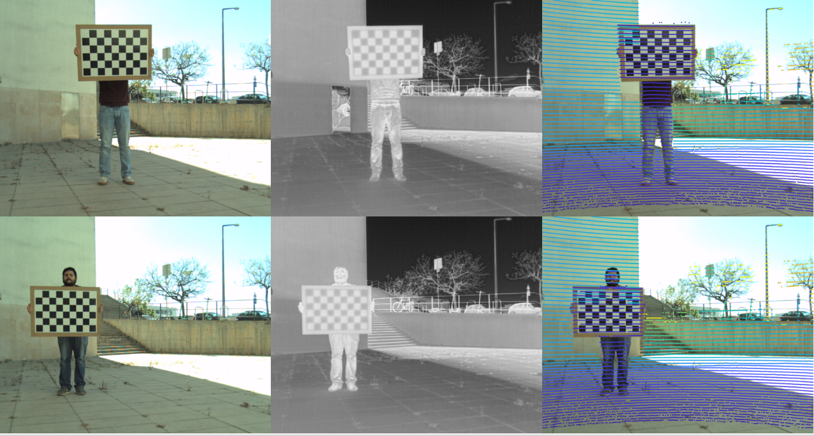
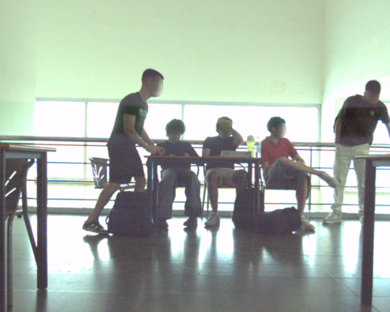
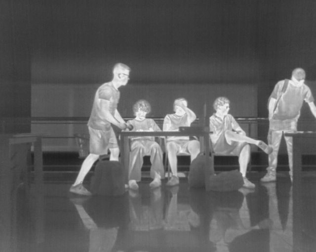
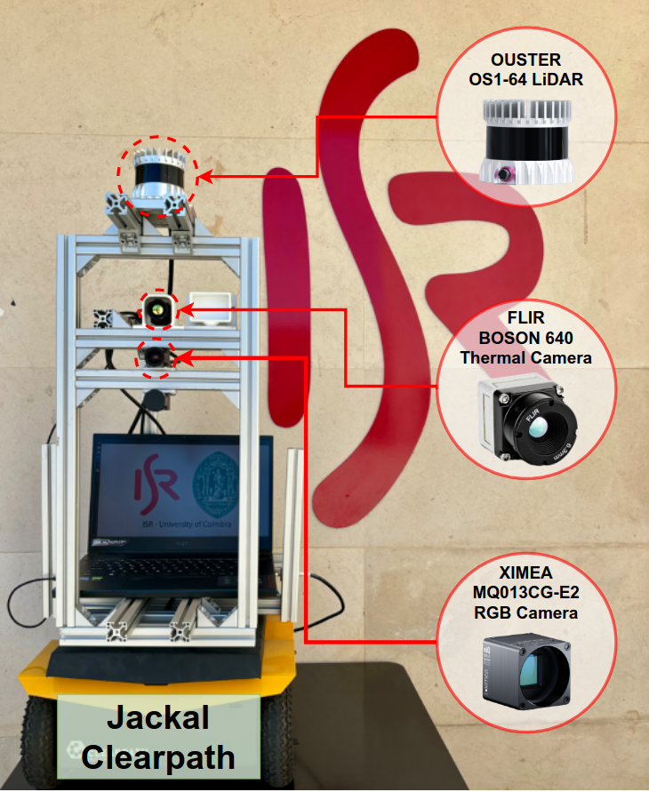

RGB
Colour images and YOLO labels.
Open MID-3K-rgb →University of Coimbra · ISR
MID-3K contains synchronised RGB, thermal, depth, and intensity scene representations, plus the documented transforms needed to work from the original LiDAR point clouds.

Repository map
This repository documents MID-3K. The modality images and original point clouds are deliberately maintained in dedicated repositories; metainfo.csv provides the scene-level metadata.
Colour images and YOLO labels.
Open MID-3K-rgb →Thermal images and YOLO labels.
Open MID-3K-thermal →LiDAR-derived depth images and labels.
Open MID-3K-depth →LiDAR-derived intensity images and labels.
Open MID-3K-intensity →Original point clouds are in the pcd/ directory of the dedicated repository. Use the COLOR–LiDAR or THERMAL–LiDAR matrix below for projection.
Reproducible association. metainfo.csv records collection time, department, floor, and annotation counts for every scene. Use it when splitting or associating data.
Sensor suite
The data was collected using ROS on a Clearpath Jackal in DEEC and DEI indoor environments at the University of Coimbra. Depth and intensity are dense LiDAR-derived representations projected onto the RGB image plane.

Ximea MQ013CG-E2 · 640 × 512 · YOLO xywhn

FLIR Boson 640 LWIR · 640 × 512 · YOLO xywhn
Ouster OS1-64-U derived · 640 × 512 · YOLO xywhn
Ouster OS1-64-U derived · 640 × 512 · YOLO xywhn

Clearpath Jackal carrying the RGB camera, thermal camera, and Ouster OS1-64-U LiDAR.
RGB and thermal checkerboard observations, with an example LiDAR-to-RGB point projection.
Calibration
Each canonical YAML stores only the matrices necessary for projection: intrinsics K, OpenCV distortion vector D = [k1, k2, p1, p2, k3], and homogeneous extrinsics T. Points are column homogeneous vectors.
K_color =
[[681.1537743213527, 0.0, 304.2411111909714],
[ 0.0, 699.3400141294942, 283.30909783571593],
[ 0.0, 0.0, 1.0]]
D_color = [-0.019676053622695044, 0.007583580084736622,
-0.0006813210784568897, -0.0014894295933110943,
-0.028837736877494857]
T_color_from_lidar =
[[-0.020711213611204426, -0.9997756359099763, 0.004441111522331731, -0.026308843328480876],
[-0.028370516356301556, -0.0038525674496390216, -0.999590051734071, -0.24229990018544303],
[ 0.999382889303408, -0.02082871971218364, -0.028284359683814708, -0.12754424641116704],
[ 0.0, 0.0, 0.0, 1.0]]K_thermal =
[[707.2820029925454, 0.0, 354.45491526689966],
[ 0.0, 703.7786568007459, 227.1052281742882],
[ 0.0, 0.0, 1.0]]
D_thermal = [-0.12429506535239071, 0.7476399506397287,
-0.00795472864117167, 0.02219946671789782,
-1.1615169504885268]
T_thermal_from_lidar =
[[-0.07141160958328907, -0.9974028109990063, -0.009381611162468106, -0.08459234939344676],
[ 0.020450563863161964, 0.007939566254821173, -0.9997593399040408, -0.1531295681987805],
[ 0.9972372618662031, -0.07158628289669194, 0.01983047267798277, -0.08319853666931896],
[ 0.0, 0.0, 0.0, 1.0]]K_color =
[[694.5767783863788, 0.0, 306.0005310511457],
[ 0.0, 713.418983871438, 286.06474899454673],
[ 0.0, 0.0, 1.0]]
D_color = [-0.009937498982803262, -0.004021254951108735,
0.000006275579508020951, -0.000992441470247646,
-0.04372114079253327]
K_thermal =
[[707.2820015296844, 0.0, 354.4549139181772],
[ 0.0, 703.7786553036885, 227.10522697281073],
[ 0.0, 0.0, 1.0]]
D_thermal = [-0.12429506339571258, 0.7476399197335876,
-0.007954728400070676, 0.022199465982827807,
-1.1615168961926972]
T_thermal_from_color =
[[ 0.9983917175807383, 0.011889988456163505, -0.055431096333156286, -13.602106271762803],
[-0.009109137461417548, 0.9986999976148243, 0.05015314924168618, 31.499143889039583],
[ 0.05595535614123418, -0.049567559337354364, 0.9972021135058056, 0.16229630951639198],
[ 0.0, 0.0, 0.0, 1.0]]Pair-specific intrinsics. The COLOR and THERMAL intrinsics in the stereo result were estimated with that stereo calibration. Keep each K, D, and T within the same calibration block.
Dataset summary
| Metric | RGB | Thermal | Depth | Intensity |
|---|---|---|---|---|
| Images | 3,083 | 3,083 | 3,083 | 3,083 |
| Annotation files | 3,083 | 3,083 | 3,083 | 3,083 |
| Person annotations | 10,824 | 10,881 | 10,824¹ | 10,824¹ |
| Approx. repository size | 1.3 GB | 1.3 GB | 977 MB | 1.7 GB |
| Annotation format | YOLO xywhn | YOLO xywhn | YOLO xywhn | YOLO xywhn |
¹ LiDAR-derived modalities use the RGB labels because the LiDAR is calibrated to the RGB camera. A small temporal misalignment may be present due to hardware limitations.
| Day | Date | Images | Thermal annotations | RGB annotations | Split |
|---|---|---|---|---|---|
| 1 | 29-Apr | 368 | 1,368 | 1,404 | Test |
| 2 | 07-May | 332 | 1,075 | 1,072 | Train |
| 3 | 08-May | 337 | 1,658 | 1,651 | Test |
| 4 | 09-May | 1,333 | 4,199 | 4,125 | Train |
| 5 | 16-May | 713 | 2,581 | 2,572 | Train |
References